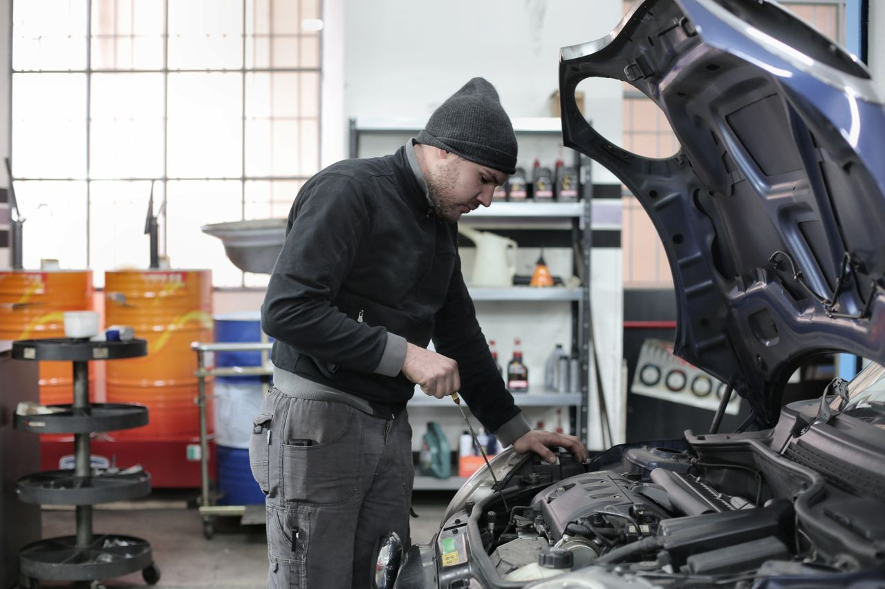

De 38° afuera
a 4° en la ventila.
Diagnóstico, recarga y reparación de aire acondicionado automotriz en San Luis Potosí. Le decimos qué tiene su carro antes de cobrarle.
Señales de que su clima
necesita revisión
Atenderlo a tiempo casi siempre sale más barato que cambiar el compresor.
Echa aire tibio
Puede ser falta de gas por una fuga, un sensor o el compresor.
Hace ruido al prenderlo
Chillidos o golpeteo suelen venir del compresor o del clutch.
Huele a humedad
El evaporador y el filtro de cabina acumulan hongos y polvo.
Enfría poco o a ratos
Ventilador, relevador o condensador sucio: se revisa con equipo.
Todo para el clima
de su carro
Trabajamos autos y camionetas. Si no sabe qué tiene, empezamos por el diagnóstico.
Diagnóstico con manómetros
Medimos presiones y temperatura para saber exactamente qué falla.
Recarga de gas
R-134a y R-1234yf, con vacío previo para que la carga dure.
Detección y reparación de fugas
Prueba con tinte y nitrógeno; cambio de mangueras y empaques.
Compresor y clutch
Reparación o cambio, con aceite y carga correctos para su modelo.
Condensador y evaporador
Limpieza, reparación o reemplazo para recuperar el enfriamiento.
Limpieza y filtro de cabina
Adiós al mal olor: sanitizado de ductos y cambio de filtro.

Claro desde
el principio
Nos escribe o llama
Cuéntenos marca, modelo y qué está haciendo el clima. Le decimos cuándo puede traerlo.
Diagnóstico
Revisamos presiones, fugas y componentes y le explicamos qué encontramos.
Precio antes de trabajar
Usted decide con el presupuesto en la mano. Nada se hace sin su autorización.
Se lo entregamos frío
Medimos la temperatura de salida con usted presente.
Clientes que
regresan
Calificación real de la ficha de Google Maps del negocio.
El mejor lugar para reparar tu aire acondicionadoReseña de un cliente en Google Maps
Antes de venir
¿Cuánto tarda el servicio?
Una recarga con diagnóstico suele quedar el mismo día. Si hay que pedir una pieza, le avisamos el tiempo antes de empezar.
¿Una recarga de gas lo arregla?
Solo si la falla es falta de gas. Si hay una fuga, el gas se vuelve a salir; por eso primero revisamos y le decimos qué conviene.
¿Trabajan con mi marca?
Atendemos autos y camionetas de todas las marcas. Escríbanos el modelo y año y le confirmamos.
¿Necesito cita?
Recomendamos escribir antes por WhatsApp para darle un horario y no tenga que esperar.
Que vuelva
a enfriar
Mándenos los datos de su carro y le respondemos por WhatsApp con disponibilidad.